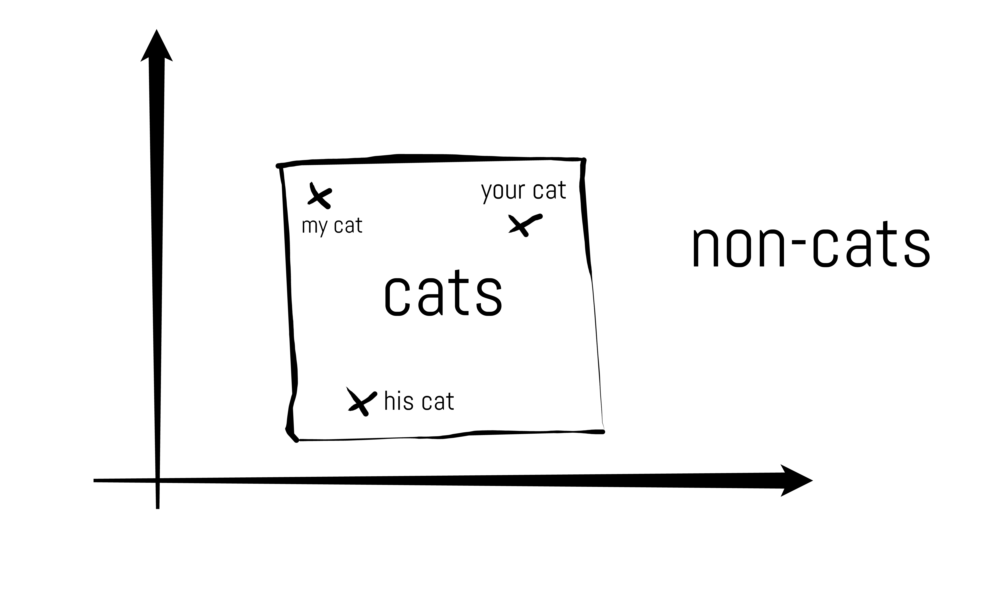
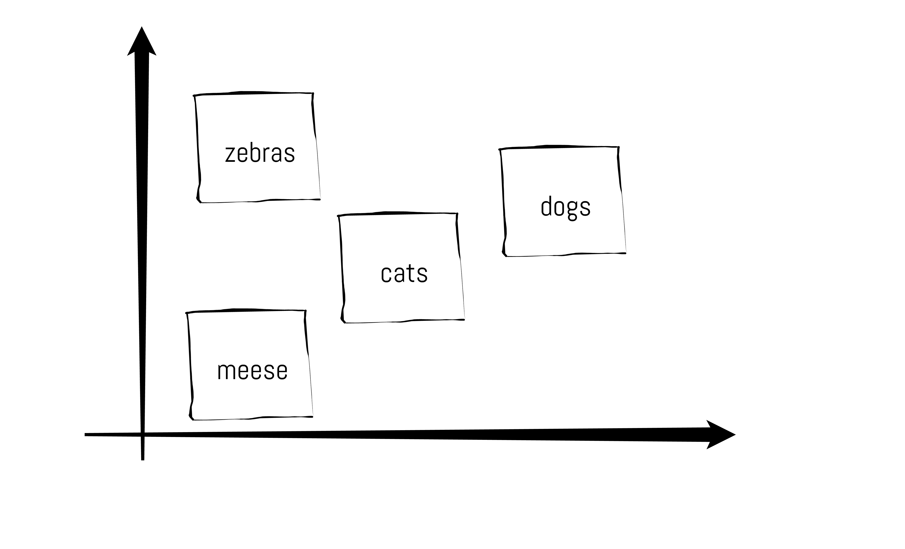
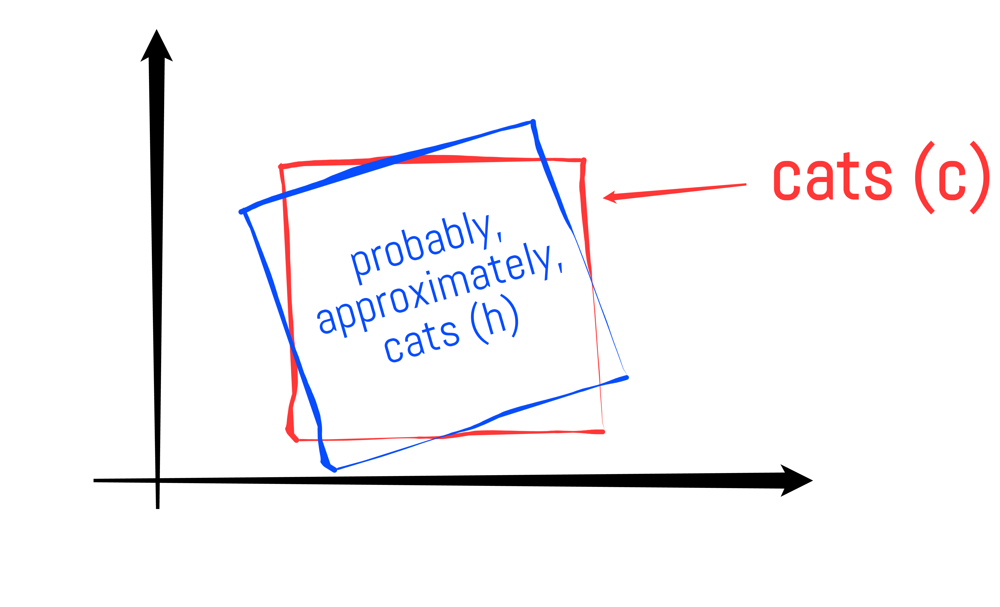
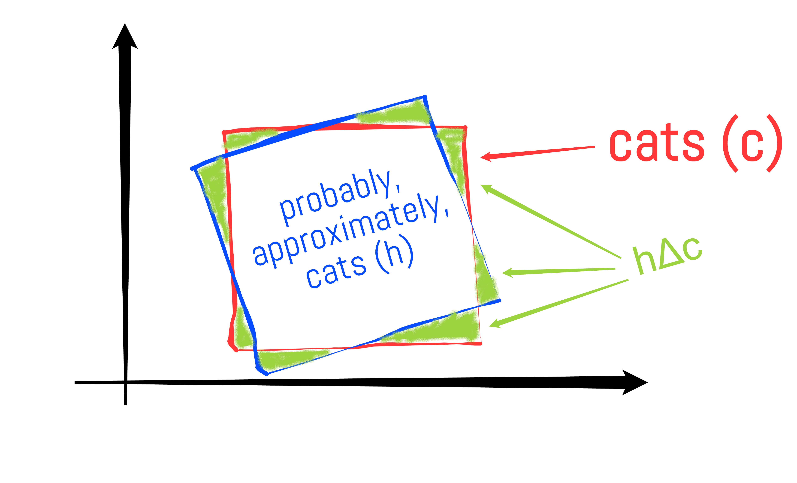

ALGO DOWN MOSES
Roie's blog
Occam's Razor in Learning Theory
January 8, 2017
"Entities must not be multiplied beyond necessity"
This is not a quote from a sex-ed pamphlet. This is Occam's famous razor: the principle that when deciding between two explanations for an observation, the simpler one will likely be better.
Those who shave with Occam's razor cite it as the epistemic justification for belief and are usually pro-science. Those who don't often criticize it as post hoc rationalization for theories already assumed on faith. They might also claim that "simpler" is in the eye of the beholder. After all, who is to really say that the theory of relativity is a simpler model of black holes than the explanation that there are rounding errors in Elon Musk's alien simulation?
Pish Posh. Today I will present the most convincing argument for Occam's razor that I have seen. This is a classical result in learning theory first proved by Anselm Blumer, Andrzej Ehrenfeucht, David Haussler, and Manfred K. Warmuth. I am not claiming absolute certainty that Occam's razor is the be all end all in how to know what we know and what we don't know. But the theorem I will prove uses math, so the conclusions are pretty much not up for debate insofar as the assumptions make sense.
To be fair to cynics, I am only presenting a sufficient but not necessary condition for a model to have predictive power. In other words not all complicated theories are bad, but simple theories are definitely good.
Before we go further, we first need to understand the basics of learning theory.
PAC Learning
What does it mean to understand something? It is an interesting question with many possible answers. Since computer scientists like to use unambiguous and actionable definitions, let's say a learner has understood a concept if it can correctly identify unseen examples of the concept. Note that this is a pragmatic approach that avoids any assumptions about the learning mechanism, much in the style of the Turing test: I have learned something if I am indistinguishable from someone who definitely knows the concept.
Great. So how do we actually measure how good a learner is? To this end, Leslie Valiant introduced a framework in the early 80s called Probably Approximately Correct Learning (or PAC Learning). Yes, that is the actual name. Let's explain a few definitions from this paradigm.
Suppose we are learning what a cat is. There is some descriptive space in which cats live, call it $\mathcal{X}$. Depending on the context in which the cat appears, this could be the space of images, DNA sequences, English sentences, etc. The concept of a cat is exactly the subset of the space containing points that represent cats.

But we want the definition of learning to capture one's ability to learn, not just how well one learned a single particular concept. Thus we usually talk about a (potentially infinite) family of things to learn called a concept class. In our example it might be the concept class of all animals.

Now we are ready for the definition of learner.
Definition: For a concept class $\mathscr{C}$, a PAC learner is an algorithm that for any $1 > \varepsilon > 0$, any $1 > \delta > 0$ and any (unknown) concept $c \in \mathscr{C}$ takes as an argument a black box function $O(c, D)$ called the teacher that on every call draws some example $x$ from a distribution $D$ on $\mathcal{X}$, as well as a binary label $y = \begin{cases} 1 & \text{if $x \in c$} \\ 0 & \text{if $x \not\in c$} \end{cases}$. With probability greater than $1 - \delta$, the algorithm then outputs a hypothesis $h \subset \mathcal{X}$ for $c$ such that the probability mass with respect to $D$ of elements that are misclassified is less than $\varepsilon$.

We denote the probability mass of the misclassified region as $h\Delta c$.

The algorithm is allowed to assume that the distribution at training time and test time are the same. If this were not the case, we could easily trick the algorithm into learning an incomplete version of the concept. This would be like teaching a child arithmetic by only giving it examples of addition and then suddenly giving it a test only on subtraction.
On the other hand, we emphasize that the algorithm needs to work for any distribution $D$ from which examples are drawn. Some distributions might be easier to learn than others, this guarantees that the algorithm is robust to all of them.
To summarize intuitively, a PAC learner is someone who can see a few examples of any animal, and then get an A+ on a test about that animal with very high probability.
Occam Learning
PAC Learning is an extensional notion of learning, in the sense that we measure how well we predict the class of a set of things. Now let's give an entirely different definition of learning that is more intensional:
Definition For $\alpha \geq 0$ and $0 \leq \beta < 1$, an $(\alpha, \beta)$-Occam Learner for class $\mathscr{C}$ is a learner that again takes a teacher $O(c, D)$ drawing $m$ examples from a distribution $D$. This time the algorithm outputs a hypothesis $h$ such that every example drawn from the teacher is consistent with $h$ (meaning it contains all positive instances, and no negative instances). Furthermore, this $h$ has length $|h| \leq \left(n \cdot |c| \right)^\alpha m^\beta$ (where $|\cdot|$ denotes the description length and $n$ is the description length of the largest sample given by $O(c,D)$).
A critical detail in the definition is that $\beta$ is less than one, which means that Occam learners strictly compress the data. In contrast to a PAC learner, an Occam learner is someone who can see a few examples of any animal, and then describe succinctly what makes that animal different from the other animals.
Which learner is better?
The Theorem
Trick question, reader. Turns out an Occam learner is automatically a PAC learner. To say that in math:
For any efficient $(\alpha, \beta)$-Occam Learner $L$, there is a constant $k_1 > 0$ such that $L$ can draw $$m \geq k_1\left(\frac{1}{\varepsilon} \log \frac{1}{\delta} + \left(\frac{(n\cdot |c|)^\alpha}{\varepsilon}\right)^{\frac{1}{1-\beta}}\right)$$ samples using $O(c,D)$, and then output a hypothesis $h$ such that $h\Delta c \leq \epsilon$ with probability greater than $1 - \delta$.
The proof is done in two parts.
Lemma (aka the cardinality version of the theorem)
As a first step, we prove that an Occam learner for which the set of possible output hypotheses $H$ satisfies $$ \log |H| \leq k_2 \varepsilon m - \log \frac{1}{\delta}$$ is a PAC learner, for some choice of $k_2$.
We would like exploit the fact that the hypothesis set is small to bound the probability of the undesirable situation in which our Occam algorithm outputs a hypothesis with large error region. Let us call this probability $B$. We want $B < \delta$.
Consider the set of bad hypotheses, which are those with error mass $\geq \varepsilon$. Fix one possible bad hypothesis $h$. Because the sampled examples are i.i.d., the probability that all the $m$ samples are consistent with the bad hypothesis is bounded by $(1 - \varepsilon)^m$. Using a simple union bound, the probability that any bad hypothesis is consistent with the $m$ samples is less than $|H|(1 - \varepsilon)^m$ where $|H|$ is the size of the possible hypothesis set (this is even a loose bound since the bad hypotheses are only a subset of the entire set of hypotheses).
Using the assumption that $\log |H| \leq k_2 \varepsilon m - \log \frac{1}{\delta}$: \begin{align*} B &\leq |H|(1 - \varepsilon)^m \\ & \leq 2^{k_2 \varepsilon m - \log \frac{1}{\delta}} (1 - \varepsilon)^m \\ & = \delta \cdot 2^{k_2 \varepsilon m} (1 - \varepsilon)^m \\ & = \delta \cdot 2^{k_2 \varepsilon m} 2^{m \log (1 - \varepsilon)} \\ & = \delta \cdot 2^{m \left(k_2 \varepsilon - \log \frac{1}{1 - \varepsilon}\right)} \\ & \leq \delta \end{align*} In the last step, we used the Taylor expansion of $\log \frac{1}{1-\varepsilon}$ to guarantee that it is bigger than $k_2 \epsilon$ for some $k_2$.
Proof of the theorem
All we have left to show is that $L$ outputs hypotheses from a sufficiently small set, and then plug into the Lemma above.
Using our assumption: \begin{align*} m &\geq k_1\left(\frac{1}{\varepsilon} \log \frac{1}{\delta} + \left(\frac{(n\cdot |c|)^\alpha}{\varepsilon}\right)^{\frac{1}{1-\beta}}\right) \\ &\geq \max \left(\frac{k_1}{\varepsilon} \log \frac{1}{\delta} , k_1 \left(\frac{(n\cdot |c|)^\alpha}{\varepsilon}\right)^{\frac{1}{1-\beta}} \right) \end{align*}
Rearranging the second bound on $m$, we have: \begin{align*} \left(\frac{m}{k_1}\right)^{1 - \beta} &\geq \frac{(n\cdot |c|)^\alpha}{\varepsilon} \\ \frac{m}{k_1} &\geq \frac{(n\cdot |c|)^\alpha m^ \beta}{\varepsilon} \left(\frac{1}{k_1} \right)^\beta \\ m & \geq \frac{k_1^{1-\beta}}{\varepsilon} \log |H| \tag{using $\log H \leq (n\cdot |c|)^\alpha m^\beta$} \\ & \geq \frac{k_1}{\varepsilon} \log |H| \tag{since $\beta < 1$} \end{align*} If we pick $k_1 = \frac{2}{k_2}$, we have: $$m \geq \frac{2}{k_2 \varepsilon} \log \frac{1}{\delta} \quad\quad \text{and} \quad\quad m \geq \frac{2}{k_2\varepsilon} \log |H|$$ the extra $2$ was clever, because it now lets us write: $$m \geq \frac{1}{k_2 \varepsilon} \log |H| + \frac{1}{k_2 \varepsilon} \log \frac{1}{\delta}$$ Finally, rearranging one last time: $$\log |H| \leq k_2 \varepsilon m - \log \frac{1}{\delta}$$ which is exactly what we had to prove.
Implications and Discussion
We have shown the amazing fact that models that explain observed phenomena and can be summarized concisely "understand" nature. I personally think that captures a good chunk of the intuition in Occam's original razor, but I guess it's up to you.
As I mentioned in the introduction this is a one directional implication. There has been some cool work on showing a partial converse. Under fairly general assumptions, the existence of a PAC algorithm implies the existence of an Occam algorithm.
In his 1998 survey paper "Occam's Two Razors: The Sharp and the Blunt" Pedro Domingos argues that Occam's razor is often abused in model selection. Specifically he criticizes this PAC theory theorem, saying that "the only connection of this result to Occam's razor is provided by the information-theoretic notion that, if a set of models is small, its members can be distinguished by short codes". As far as I can tell, Domingos is only aware of the cardinality version of the proof; the objection is resolved by the second argument.
For further reading I highly recommend the book by Kearns and Vazirani, from which the above proof is taken.